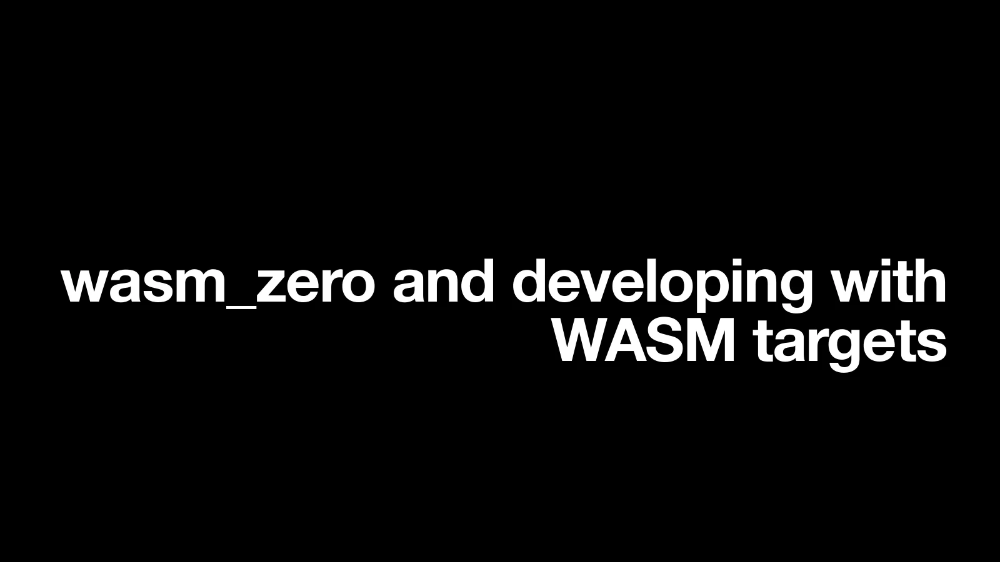
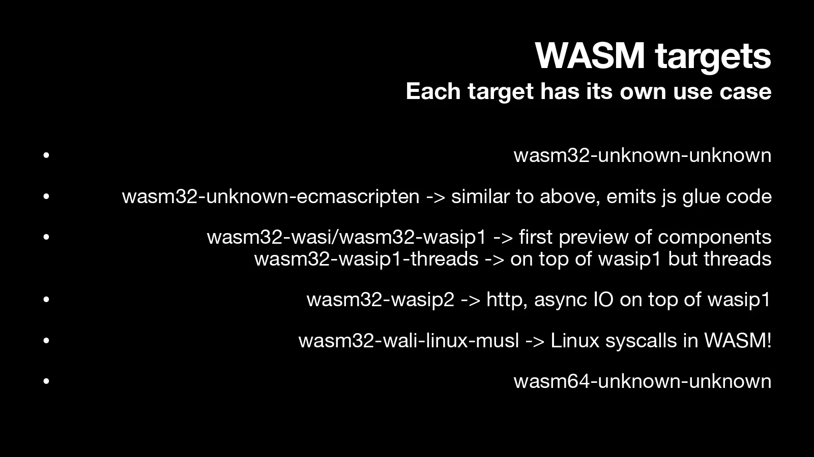
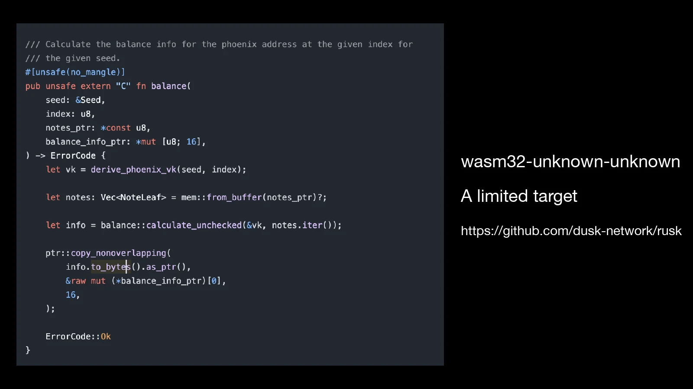
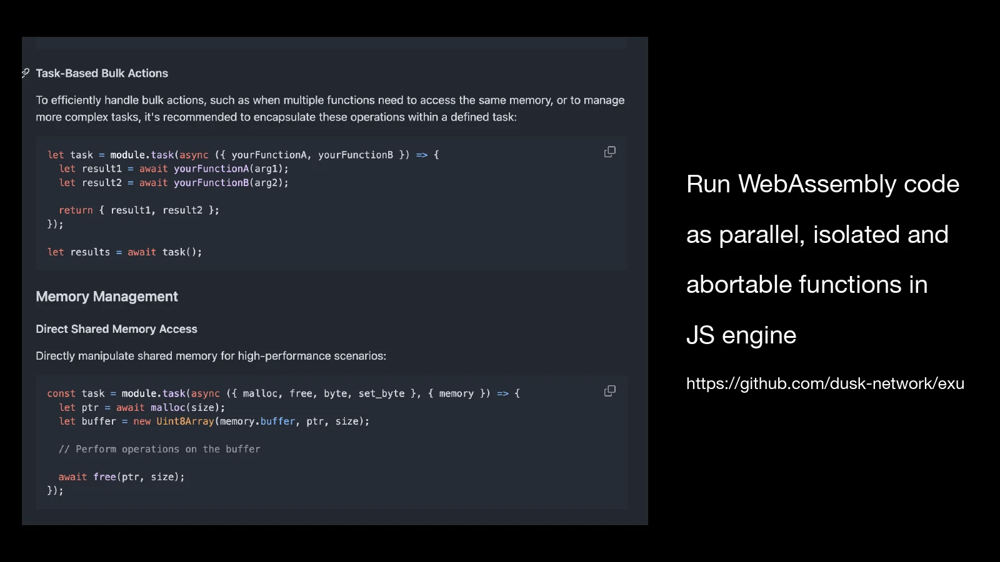
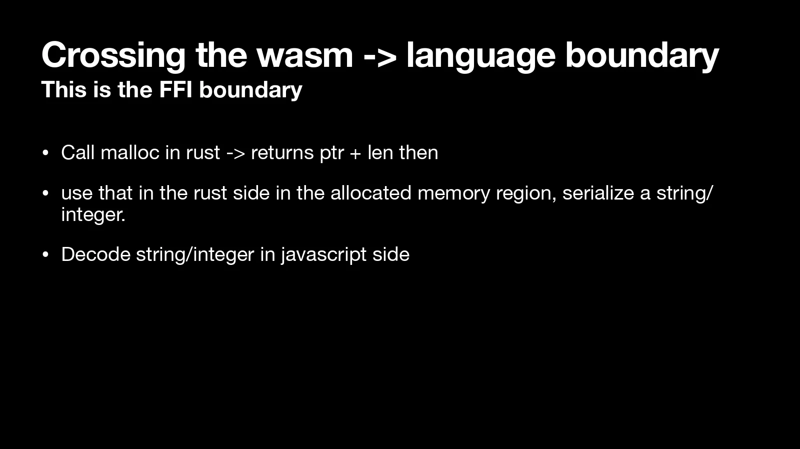
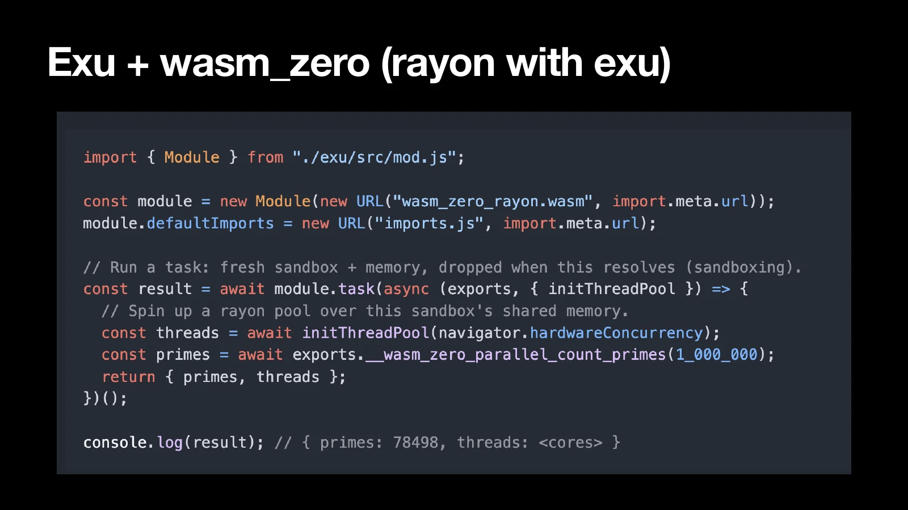
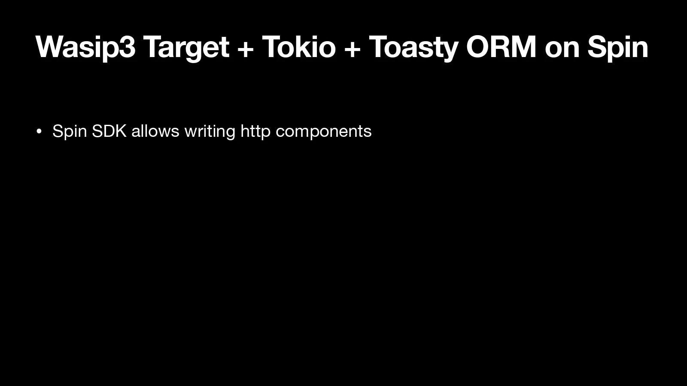
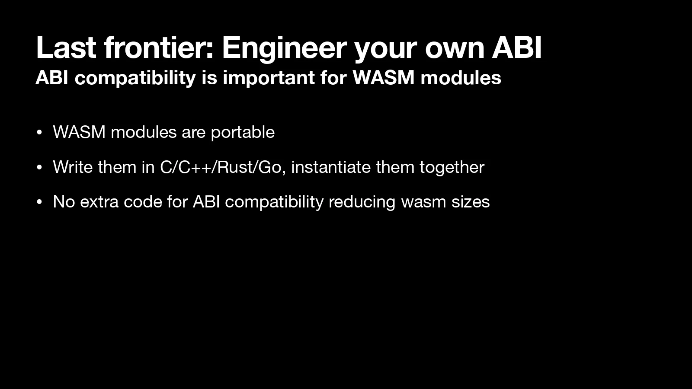

-

01wasm_zero and developing with WASM targets -

02WASM targets -

03Problem statement -

04wasm32-unknown-unknown: a limited targetgithub.com/dusk-network/rusk -

05Exu: parallel, isolated, abortable WASM in the JS enginegithub.com/dusk-network/exu -

06Crossing the wasm → language boundary -

07Zero copy serialisation on the Rust side -
![wasm_zero: rkyv zero-copy serialisation on the Rust side, emitting only minimal decoding glue on the JS side. Code: a #[wasm_zero] pub fn get_adult_person returning a Person, and JS that awaits initWasmZero("app.wasm") and calls wasmzero.get_adult_person() to get name, age, email and scores. Less WASM bundle size emitted overall, faster decoding of primitives and complex objects, supports the WASI target, no_std and std both supported, use your own allocator.](slides/08.webp)
08wasm_zero -

09Exu + wasm_zero (rayon with Exu) -

10wasip3 target + Tokio + Toasty ORM on Spin -

11Last frontier: engineer your own ABI